Semana de la salud · Semana de la sostenibilidad · Campañas educativas
Semanas de la salud y de la sostenibilidad que tu gente sí recuerda.
“Necesito que mi gente aprenda de sostenibilidad y salud, y que no se le olvide.”
Tomamos los temas técnicos que tu empresa necesita enseñar —normas de seguridad y salud en el trabajo, guías de autocuidado, metas ambientales y ODS— y los convertimos en juegos, experiencias y campañas que la gente vive con las manos. Así la información se vuelve hábito.
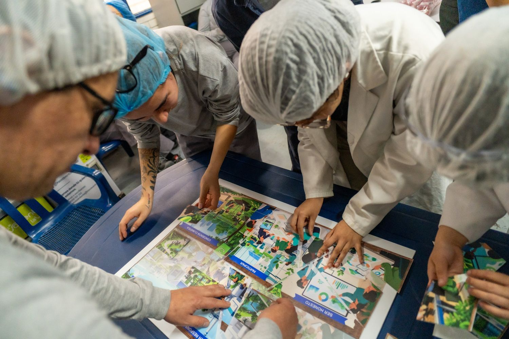
Lo que vemos en las empresas
Un tema importante explicado en una charla se olvida antes del almuerzo.
- La semana de la salud se repite cada año con las mismas charlas, y la gente asiste por cumplir.
- Folletos y presentaciones que explican el reciclaje, el ahorro de agua o el autocuidado, y que nadie vuelve a mirar.
- La norma se cumple en el papel, pero los hábitos en la planta y en la oficina no cambian.
- Equipos operativos con poco tiempo que necesitan aprender rápido, en su propio espacio y sin salir del turno por horas.
Una sola idea, dos grandes temas
Convertimos información técnica en aprendizaje que se vive.
Ya sea cuidar el planeta o cuidar el cuerpo y la mente, el reto es el mismo: que un tema serio se entienda, se recuerde y se practique. Lo resolvemos con arte, juego y naturaleza, diseñados con los temas, los valores y la marca de tu empresa.
Sostenibilidad y medio ambiente
Semana de la sostenibilidad, Land Art, juegos ambientales y clubes ambientales para que el ahorro de agua, energía y recursos se vuelva cultura.
Ver más ↓ Tema 2Salud física, emocional y mental
Semana de la salud, campañas de promoción y prevención y experiencias de autocuidado para que las guías de salud se vuelvan hábitos.
Ver más ↓Cómo llega a tu gente
Cuatro formatos, uno o varios a la vez.
- 01
Semanas temáticas
Semana de la salud o de la sostenibilidad diseñada a la medida: varias estaciones o encuentros, en tu sede, que recorren los temas que tu empresa necesita reforzar.
- 02
Juegos personalizados
Tableros gigantes, dados, rompecabezas, cartas y juegos de roles con tus propios temas, tus valores y tu marca. Quedan en la empresa para seguir usándolos.
- 03
Campañas de promoción y prevención
Una ruta de experiencias a lo largo del año para que un tema de salud o de medio ambiente no se quede en un solo día.
- 04
Objetos para la autorregulación
Herramientas didácticas de bienestar emocional para regalar a colaboradores o clientes y fortalecer el vínculo con tu marca.
Tema 1
Sostenibilidad, formación ambiental y Land Art
Transformamos el rigor técnico ambiental en una cultura organizacional participativa.
- Formato
- Semana de la sostenibilidad
- Método
- Land Art y metodologías ágiles
- Temas
- Agua, energía y residuos
- Continuidad
- Clubes ambientales
Cómo funciona
Diseñamos e implementamos la Semana de la Sostenibilidad con Land Art, juegos y metodologías ágiles, para sensibilizar a las personas en eficiencia hídrica, eficiencia energética y gestión de residuos. Para que el compromiso no termine con la semana, creamos Clubes Ambientales con colaboradores o con clientes.
Qué se trabaja
- Eficiencia hídrica
- Eficiencia energética
- Gestión de residuos
- Objetivos de Desarrollo Sostenible
- Valores ambientales de la empresa
- Educación ambiental con Land Art
Qué cambia
Hábitos de ahorro de recursos que se pueden medir, un aporte concreto a los ODS y una cultura de sostenibilidad que fortalece la reputación de la empresa.
Lo hemos hecho con
Darnel, Centro Mayor e Imprenta Nacional, con juegos diseñados para cada empresa, desde la planta de producción hasta las áreas comunes.
Tema 2
Promoción y prevención de la salud física, emocional y mental
La salud es un estado integral de bienestar físico, mental y social. Se construye con prevención y con hábitos.
- Formato
- Semana de la salud y campañas
- Integra
- Ergonomía, nutrición, sueño y salud mental
- Parte de
- Guías de salud y normativa de SST
- Para
- Colaboradores, clientes o afiliados
Cómo funciona
Diseñamos programas a la medida que integran ergonomía, nutrición, higiene del sueño y salud mental a través de experiencias de expresión y movimiento. Traducimos guías de salud y normativas de seguridad y salud en el trabajo en contenidos que la gente entiende y aplica, y creamos espacios de autocuidado que se adaptan a lo que cada grupo necesita aprender.
Dimensiones del autocuidado
- Bienestar sensorial y calma
- Aromaterapia, reflexología, higiene del sueño y respiración consciente
- Dinámica de movimiento
- Yoga, danza folclórica, ritmos latinos y rumba aeróbica
- Nutrición consciente
- Cocina saludable, alimentación balanceada y recetarios ilustrados
- Biofilia y expresión
- Huertas urbanas, jardinería, artes plásticas y juegos tradicionales
- Educación en prevención
- Salud femenina y masculina, cesación tabáquica, uso responsable de medicamentos y cultura de prevención integral
Qué cambia
Más adherencia a los protocolos de salud y hábitos preventivos que reducen riesgos. Apoya a tu empresa en el cumplimiento de su Sistema de Gestión de Seguridad y Salud en el Trabajo.
Quién pone el rigor médico
El conocimiento clínico lo entrega tu empresa o tu equipo de salud. Simoné lo traduce en experiencias de formación, juegos y programas que la gente entiende, practica y recuerda.
Lo hemos hecho con
Fundación Santa Fe de Bogotá, Roche, ConvaTec, Solventum y Centro Mayor.
Caso de éxito · Sector salud
Un escape game para cirujanos en un congreso de cirugía en Cartagena.
El cliente entrega el rigor médico. Nosotros lo traducimos en una experiencia que se juega, se resuelve en equipo y se recuerda.
- El reto
- Una agencia BTL necesitaba que un laboratorio presentara contenido clínico complejo a los asistentes de un congreso de cirugía, de forma que se viviera y no solo se escuchara.
- Lo que hizo Simoné
- El diseño completo de la experiencia educativa: los juegos, la mecánica del juego, las pistas y las cinco estaciones del escape game, con el contenido médico que entregó el laboratorio.
- Cómo se vivió
- Equipos de médicos recorrieron cinco estaciones con casos clínicos, cofres con candado, tarjetas de misión y piezas para armar con las manos. Cada estación se abría al resolver el reto anterior.
- Quiénes participaron
- Agencia BTL (cliente) · Laboratorio del sector salud (marca) · Simoné (diseño de la experiencia educativa)
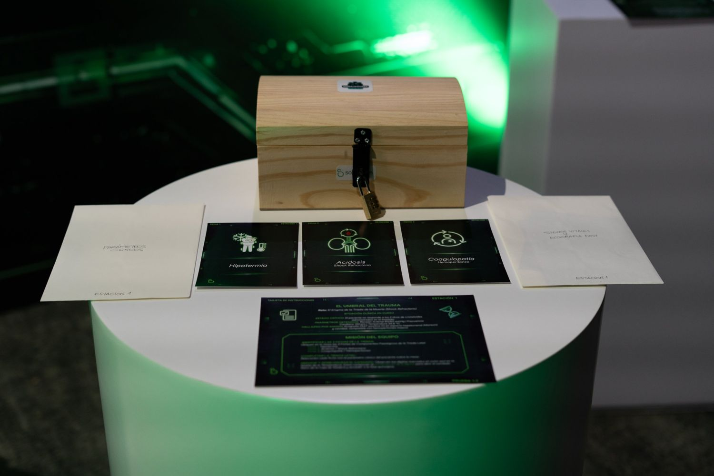
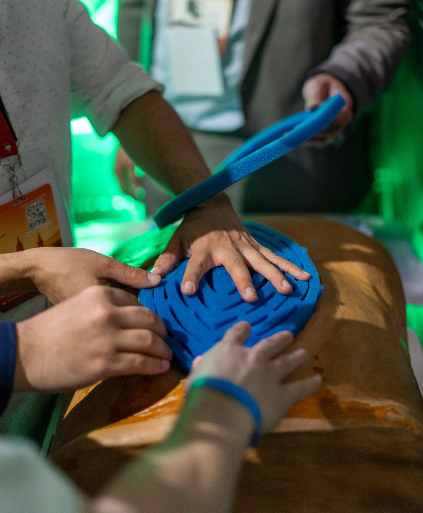
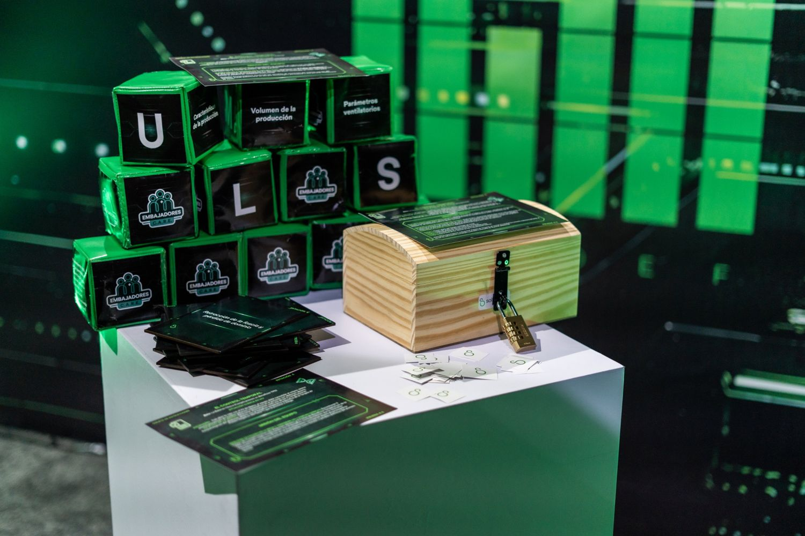
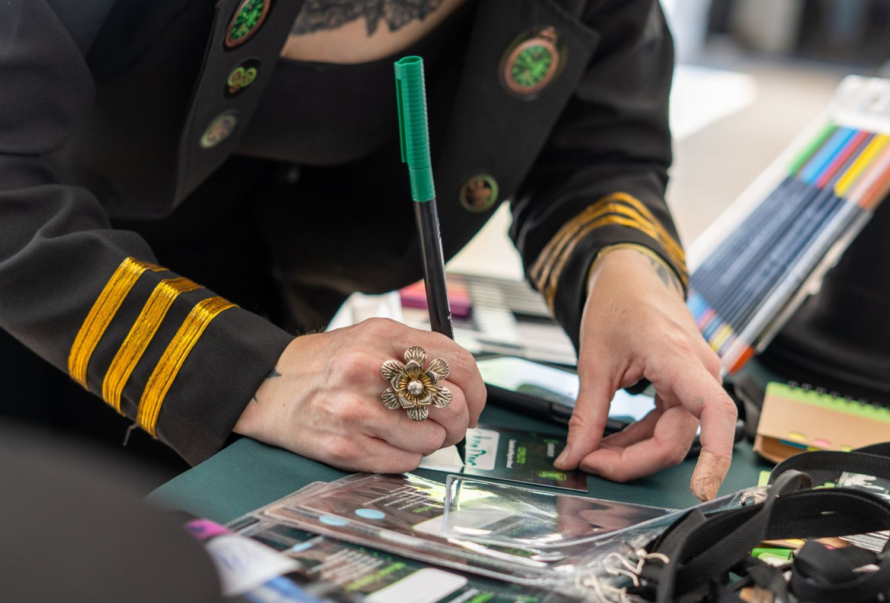
Objetos para la autorregulación
Un regalo que cuida a quien lo recibe.
Dos herramientas didácticas de bienestar emocional, diseñadas por Simoné, para obsequiar a tus colaboradores o clientes y fortalecer su vínculo con tu marca.
- Cartas
Cultivando · Alegría y armonía para el alma
Un juego de 37 cartas para cultivar el bienestar diario, con recomendaciones para la claridad mental, la serenidad y la alimentación consciente.
- Cuaderno
Recetas de amor para el alma
Un cuaderno de bienestar emocional para descubrir los aromas y las infusiones naturales y crear estrategias propias de autocuidado, con mezclas y recetas para encontrar tranquilidad.
Fotos reales de nuestras experiencias
Así aprende una planta, una oficina, un centro comercial.
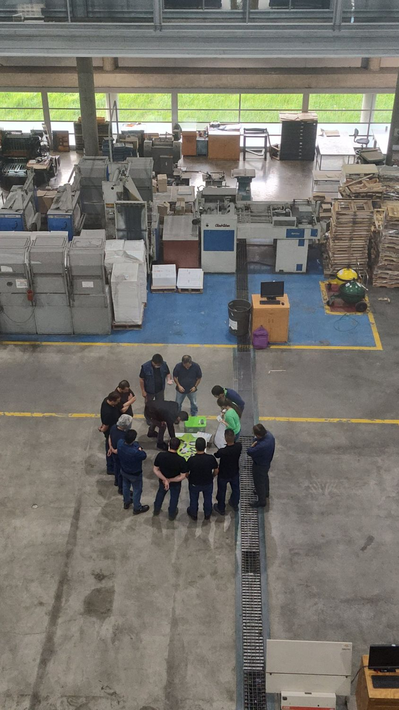
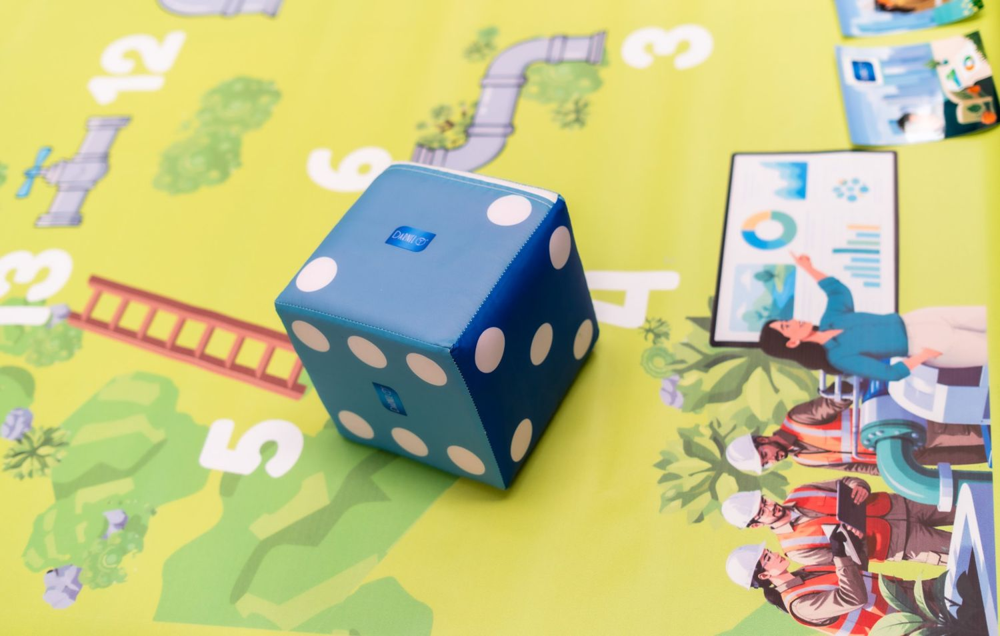
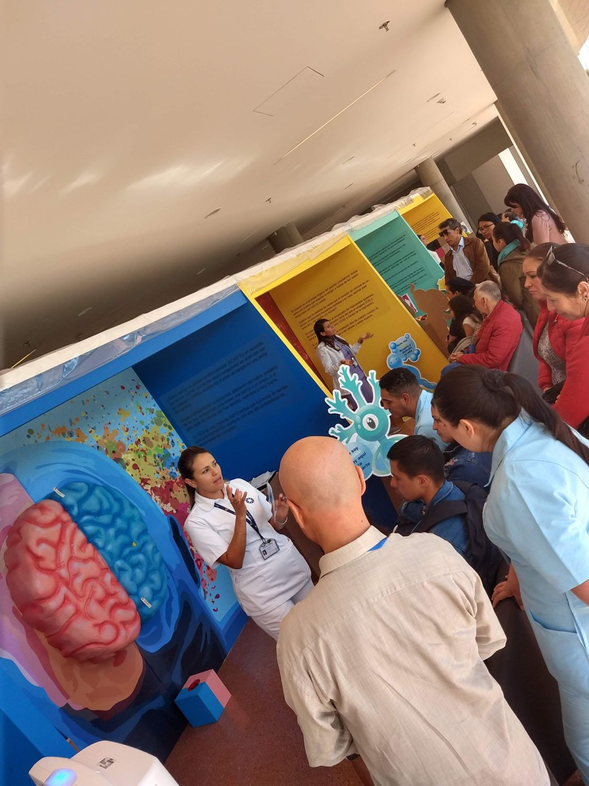
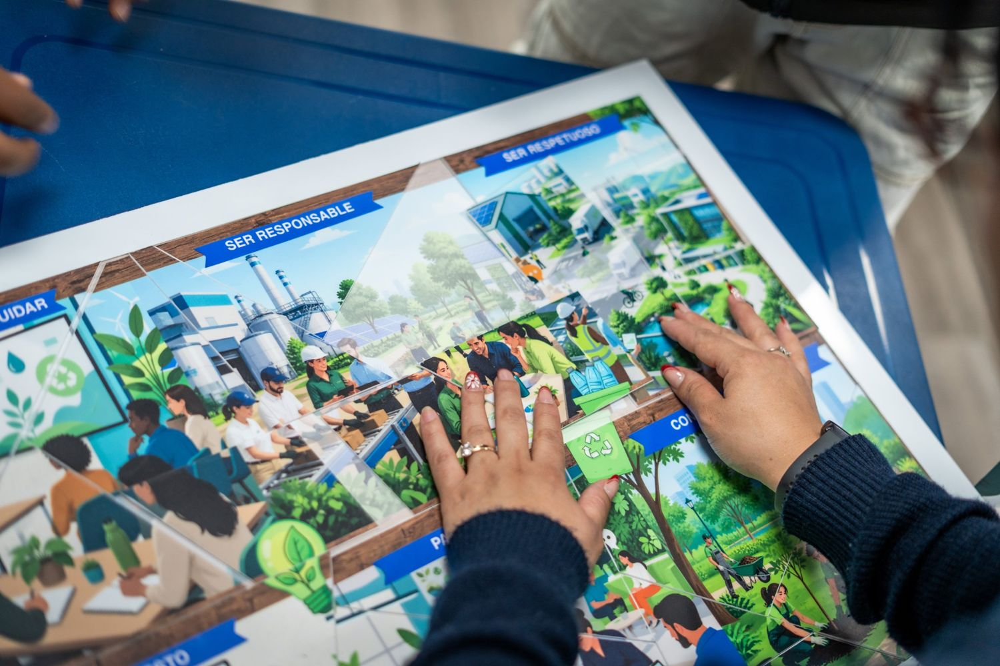
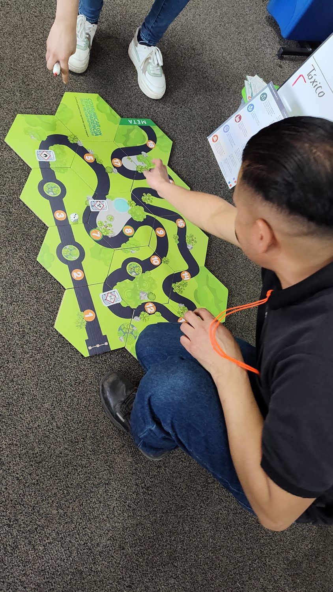
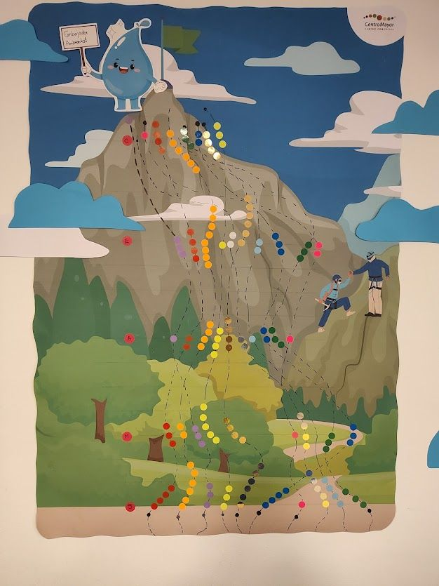

Lo que dicen quienes nos contratan
Un equipo que conoce el tema y lo vuelve experiencia.
143personas respondieron nuestra encuesta después de su experiencia. Las 143 recomendarían a Simoné.
Contar con un equipo comprometido que conoce el tema, que tiene una carga educativa importante y que conoce los lineamientos de la Fundación Santa Fe de Bogotá.
-
La experiencia y experticia en captar y hacer realidad las ideas suministradas por nosotros.
César Alfonso RíosCoordinador de Experiencias · Centro Mayor Centro Comercial
-
Calidad humana, facilidad de contratación y empatía con el equipo.
Mónica Yohana JiménezGestora SG-SST · Centro Mayor Centro Comercial
-
Conocimiento de la esencia de la marca por parte del proveedor. Confiabilidad. Respuesta inmediata.
Paula Julieth GilServicio al Cliente · Centro Mayor Centro Comercial
También han confiado en nosotros: Fundación Santa Fe de Bogotá · Roche · ConvaTec · Solventum · Darnel · Imprenta Nacional · Centro Mayor · Doria
Preguntas frecuentes
Lo que nos preguntan antes de empezar.
¿Quién define el contenido médico?
El rigor médico lo entrega el cliente: su equipo de salud, sus guías y sus protocolos. Simoné diseña la experiencia educativa —los juegos, la mecánica, las pistas y las estaciones— para que ese conocimiento se aprenda haciendo.
¿Pueden diseñar el juego con los temas y la marca de mi empresa?
Sí. Cada tablero, rompecabezas, juego de cartas o de roles se diseña con tus propios temas, tus valores y tu imagen. Los juegos quedan en la empresa para seguir usándolos después de la semana.
¿Pueden trabajar dentro de una planta de producción?
Sí. Llevamos las experiencias a la planta, la bodega o las áreas comunes, y las adaptamos a los turnos y al tiempo que el equipo operativo tiene disponible.
¿Esto ayuda a cumplir con el SG-SST?
Las campañas de promoción y prevención y las semanas de la salud apoyan las actividades de formación y prevención de tu Sistema de Gestión de Seguridad y Salud en el Trabajo. Partimos de tus guías y de tu normativa, y dejamos registro de las actividades.
¿Cómo se mide el resultado?
Medimos el conocimiento antes y después de cada experiencia con el modelo de pensamiento visible de Harvard Project Zero y, en las campañas largas, volvemos a medir a los tres meses.
¿Dónde pueden hacerlo?
Nuestra base está en Bogotá y nos trasladamos a otras ciudades. Hemos trabajado en Medellín, Cali, Pasto, Barranquilla, Cartagena e Ibagué, en Perú y Ecuador, y de forma virtual en México, República Dominicana y Costa Rica.
Hablemos
¿Qué tema quieres que tu gente no olvide?
Cuéntanos el tema, el público y la fecha de tu semana de la salud o de la sostenibilidad. En 30 minutos de conversación te proponemos cómo convertirla en una experiencia.
Volver al inicio